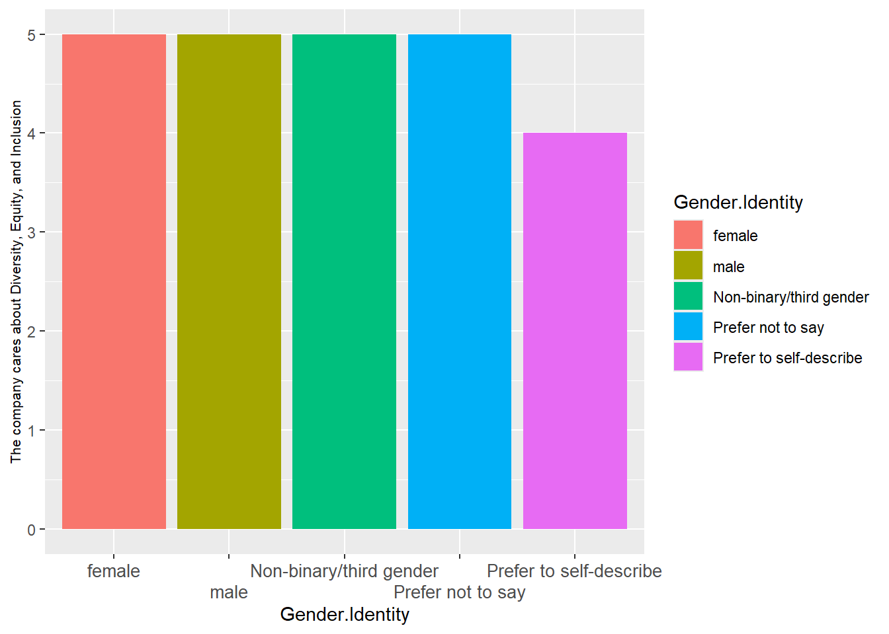

library(readxl)
library(dplyr)
library(tidyverse)
library(psych)
library(ggplot2)
library(ggpubr)
Merge1 <- merge(CompanyData, DiversityData, by.x = "EmployeeID")
MasterData <- merge(Merge1, EngagementData, by.x = "EmployeeID")
names <- c('level', 'Department', 'Gender', 'Gender.Identity', 'Race.Ethnicity', 'Veteran', 'Disability', 'Education', 'Sexual.Orientation')
MasterData[,names] <- lapply(MasterData[,names], factor)Engagement and Diversity
Engagement
Diversity
R
Visualizations
Confirmatory Factor Analysis
Project Goal
The overarching goal of this project is to better understand the demographic makeup of this company using their HR data and to assess how engaged employees are.
About This Data
This HR data set was provided on Kaggle here. Data is housed in four text files:
A job profile map containing job metadata (job title, department, compensation, etc.)
A company data file that contains more detail about employees (i.e., start/end dates, location, salary, bonus pay, etc.)
A diversity text file that contains employee demographics
An engagement survey text file which contains results of an employee survey questionnaire (due to reading issues, I converted this text file to a csv file)
First, I want to clean and match up the data and provide some general oversights on the demographic makeup of the employees at this company.
Employee Demographics
First, the data needs to be read in and then matched up using indicator keys in the data sets.
Now to calculate some general demographic statistics.
mean(MasterData$Age)[1] 44.18465sd(MasterData$Age)[1] 12.76855MasterData %>%
group_by(Veteran) %>%
summarise(n = n()) %>%
mutate(freq = n / sum(n))# A tibble: 2 × 3
Veteran n freq
<fct> <int> <dbl>
1 0 2688 0.951
2 1 139 0.0492MasterData %>%
group_by(Disability) %>%
summarise(n = n()) %>%
mutate(freq = n / sum(n))# A tibble: 2 × 3
Disability n freq
<fct> <int> <dbl>
1 0 2696 0.954
2 1 131 0.0463MasterData %>%
group_by(Race.Ethnicity) %>%
summarise(n = n()) %>%
mutate(freq = n / sum(n))# A tibble: 10 × 3
Race.Ethnicity n freq
<fct> <int> <dbl>
1 "" 321 0.114
2 "American Indian or Alaska Native" 1 0.000354
3 "Asian" 721 0.255
4 "Black or African American" 89 0.0315
5 "Hispanic or Latino" 117 0.0414
6 "Native American or Alaska Native" 3 0.00106
7 "Native Hawaiian or Other Pacific Islander" 2 0.000707
8 "Native Hawaiian or Pacific Islander" 7 0.00248
9 "Two or More Races" 31 0.0110
10 "White" 1535 0.543 MasterData %>%
group_by(Gender.Identity) %>%
summarise(n = n()) %>%
mutate(freq = n / sum(n))# A tibble: 5 × 3
Gender.Identity n freq
<fct> <int> <dbl>
1 female 1232 0.436
2 male 1298 0.459
3 Non-binary/third gender 75 0.0265
4 Prefer not to say 166 0.0587
5 Prefer to self-describe 56 0.0198MasterData %>%
group_by(Sexual.Orientation) %>%
summarise(n = n()) %>%
mutate(freq = n / sum(n))# A tibble: 6 × 3
Sexual.Orientation n freq
<fct> <int> <dbl>
1 Bisexual 55 0.0195
2 Gay 60 0.0212
3 Heterosexual 1817 0.643
4 Lesbian 43 0.0152
5 Missing 749 0.265
6 Other LGBTQ+ 103 0.0364MasterData %>%
group_by(Education) %>%
summarise(n = n()) %>%
mutate(freq = n / sum(n))# A tibble: 5 × 3
Education n freq
<fct> <int> <dbl>
1 Graduate 197 0.0697
2 High School 481 0.170
3 PhD 68 0.0241
4 Some College 177 0.0626
5 Undergraduate 1904 0.674 From this output, I can tell that the average employee is 44 years of age, typically not a veteran (approx. %5 of employees are a veteran), and did not report a disability (approx. 5% of employees reported a disability status). Further, the organization is 55% White with Asian employees making up the second most frequent demographic at 26%. Employees are about evenly split between male and female (around 44% each), most identify as heterosexual (64%), and about 67% have at least an undergraduate degree.
The client is particularly interested in the gender and racial makeup of each level of their organization (i.e., individual contributor, manager, director, etc.) and asked to have some visualizations made up.
LevelG <- MasterData %>%
group_by(level, Gender.Identity) %>%
filter(Gender.Identity != "Prefer not to say")%>%
summarise(n = n()) %>%
mutate(freq = n / sum(n))
LevelR <- MasterData %>%
group_by(level, Race.Ethnicity) %>%
filter(Race.Ethnicity != "")%>%
summarise(n = n()) %>%
mutate(freq = n / sum(n))
ggdotchart(LevelG, x = "level", y = "freq",
color = "Gender.Identity",
sorting = "asc", sort.by.groups = TRUE,
add = "segments",
add.params = list(color = "lightgray", size = 2),
group = "Gender.Identity",
dot.size = 4,
ggtheme = theme_pubclean()
)+
font("x.text", size = 8, vjust = 0.5)ggplot(LevelR, aes(fill=Race.Ethnicity, y=freq, x=level)) +
geom_bar(position="stack", stat="identity") +
geom_text(aes(label = scales::percent(freq, accuracy = 1)),
position = position_stack(vjust = .5), size = 1.5) +
scale_x_discrete(guide=guide_axis(n.dodge=4)) Of particular note is that only White and Asian employees currently hold executive and C-suite positions (CSuite, SVP, & VP positions).
Employee Engagement
Now that I have a sense of the demographic breakdown of the employees at this company, my next goal is to better understand how engaged the employees feel at work and if these engagement perceptions significantly differ depending on employee’s identities. First, I was asked to create a composite engagement variable and assess the reliability and validity of the scale. However, looking at the items, I doubt that the items will play together since the “engagement” items cover topics such as perspectives on DEI, market survivability of their company, compensation, and engagement.
Note: none of the engagement items were reverse coded so there is no need to reverse score any items.
library(psych)
#Create composite engagement score
MasterData %>%
rowwise()%>%
mutate(Engagement = mean(c(E1, E2, E3, E4, E5, E6, E7, E8, E9, E10, E11, E12, E13, E14, E15, E16, E17, E18, E19)))-> MasterData
#Create engagement scale Reliability Analysis
EngagementScale <- select(MasterData, E1, E2, E3, E4, E5, E6, E7, E8, E9, E10, E11, E12, E13, E14, E15, E16, E17, E18, E19)
psych::alpha(EngagementScale)Some items ( E2 E4 E7 E9 E11 E13 E14 E15 E16 ) were negatively correlated with the first principal component and
probably should be reversed.
To do this, run the function again with the 'check.keys=TRUE' option
Reliability analysis
Call: psych::alpha(x = EngagementScale)
raw_alpha std.alpha G6(smc) average_r S/N ase mean sd median_r
0.0073 0.0074 0.013 0.00039 0.0074 0.027 2.9 0.23 -0.0012
95% confidence boundaries
lower alpha upper
Feldt -0.05 0.01 0.06
Duhachek -0.05 0.01 0.06
Reliability if an item is dropped:
raw_alpha std.alpha G6(smc) average_r S/N alpha se var.r med.r
E1 0.0022 0.0020 0.0075 1.1e-04 0.0020 0.027 0.00033 -0.00104
E2 0.0119 0.0119 0.0164 6.7e-04 0.0120 0.027 0.00030 -0.00083
E3 0.0079 0.0078 0.0130 4.4e-04 0.0079 0.027 0.00033 -0.00125
E4 0.0093 0.0093 0.0142 5.2e-04 0.0094 0.027 0.00032 -0.00116
E5 -0.0084 -0.0085 -0.0024 -4.7e-04 -0.0085 0.028 0.00033 -0.00302
E6 0.0033 0.0035 0.0090 1.9e-04 0.0035 0.027 0.00033 -0.00125
E7 0.0148 0.0149 0.0196 8.4e-04 0.0151 0.027 0.00033 -0.00083
E8 0.0190 0.0191 0.0231 1.1e-03 0.0195 0.027 0.00030 -0.00116
E9 0.0053 0.0053 0.0107 3.0e-04 0.0053 0.027 0.00033 -0.00083
E10 -0.0040 -0.0042 0.0015 -2.3e-04 -0.0042 0.027 0.00032 -0.00189
E11 0.0084 0.0085 0.0137 4.8e-04 0.0086 0.027 0.00033 -0.00125
E12 0.0156 0.0154 0.0200 8.7e-04 0.0157 0.027 0.00032 -0.00083
E13 0.0038 0.0041 0.0095 2.3e-04 0.0041 0.027 0.00033 -0.00125
E14 0.0121 0.0124 0.0175 7.0e-04 0.0126 0.027 0.00034 -0.00034
E15 0.0144 0.0147 0.0194 8.3e-04 0.0149 0.027 0.00033 -0.00011
E16 0.0018 0.0019 0.0073 1.0e-04 0.0019 0.027 0.00032 -0.00189
E17 -0.0044 -0.0040 0.0019 -2.2e-04 -0.0040 0.027 0.00033 -0.00189
E18 0.0190 0.0189 0.0232 1.1e-03 0.0192 0.027 0.00032 -0.00104
E19 -0.0012 -0.0010 0.0045 -5.7e-05 -0.0010 0.027 0.00032 -0.00189
Item statistics
n raw.r std.r r.cor r.drop mean sd
E1 2827 0.24 0.24 0.1106 0.01138 2.9 0.99
E2 2827 0.22 0.22 -0.0537 -0.00826 2.9 1.03
E3 2827 0.23 0.23 0.0095 -0.00028 2.9 1.00
E4 2827 0.23 0.23 -0.0127 -0.00308 2.9 1.02
E5 2827 0.26 0.26 0.2903 0.03292 2.9 1.00
E6 2827 0.24 0.24 0.0843 0.00890 2.9 1.01
E7 2827 0.21 0.21 -0.1128 -0.01433 2.9 1.01
E8 2827 0.20 0.21 -0.1791 -0.02317 2.9 1.00
E9 2827 0.23 0.23 0.0530 0.00504 2.9 1.00
E10 2827 0.25 0.25 0.2207 0.02397 2.9 1.00
E11 2827 0.23 0.23 -0.0031 -0.00136 2.9 1.02
E12 2827 0.21 0.21 -0.1204 -0.01591 2.9 1.01
E13 2827 0.24 0.24 0.0755 0.00801 2.9 1.02
E14 2827 0.22 0.22 -0.0726 -0.00897 2.9 1.00
E15 2827 0.21 0.21 -0.1093 -0.01360 2.9 1.00
E16 2827 0.24 0.24 0.1158 0.01200 2.9 1.02
E17 2827 0.26 0.25 0.2135 0.02398 2.9 1.03
E18 2827 0.21 0.21 -0.1803 -0.02255 2.9 1.02
E19 2827 0.25 0.25 0.1667 0.01776 2.9 1.02
Non missing response frequency for each item
1 2 3 4 5 miss
E1 0.09 0.25 0.31 0.34 0.01 0
E2 0.10 0.24 0.28 0.36 0.01 0
E3 0.09 0.25 0.30 0.35 0.01 0
E4 0.10 0.25 0.28 0.35 0.01 0
E5 0.09 0.27 0.30 0.32 0.01 0
E6 0.11 0.24 0.31 0.33 0.01 0
E7 0.09 0.25 0.29 0.35 0.01 0
E8 0.09 0.26 0.29 0.35 0.01 0
E9 0.09 0.25 0.29 0.36 0.01 0
E10 0.09 0.25 0.31 0.35 0.01 0
E11 0.10 0.24 0.29 0.35 0.01 0
E12 0.09 0.25 0.29 0.36 0.01 0
E13 0.10 0.24 0.30 0.35 0.01 0
E14 0.10 0.24 0.31 0.35 0.01 0
E15 0.10 0.25 0.30 0.34 0.01 0
E16 0.10 0.24 0.29 0.35 0.01 0
E17 0.11 0.25 0.30 0.33 0.01 0
E18 0.10 0.25 0.27 0.37 0.01 0
E19 0.11 0.24 0.30 0.35 0.01 0Confirmatory Factor Analysis
Indeed, analyses support my contention that combining all “engagement” items into one scale does not make sense from a measurement standpoint. Already there is strong evidence that there is a lack of reliability here from a composite scale perspective. Cronbach’s alpha for this scale is unacceptable, sitting at α= .01 (I would accept values above .70). I also ran a confirmatory factor analysis and none of the items loaded together onto a global latent factor of engagement; all factor loadings are less than .255. I would like to see loadings of at least .40 and realistic CFI and TLI values (within 0-1 with values close to 1 without exceeding 1).
library(lavaan)
CFA1 <- 'Engage =~ E1 + E2 + E3 + E4 + E5 + E6 + E7 + E8 + E9 + E10 + E11 + E12 + E13 + E14 + E15 + E16 + E17 + E18 + E19'
CFAOut <- cfa(CFA1, data=MasterData)
summary(CFAOut, fit.measures=TRUE, standardized=TRUE)lavaan 0.6-18 ended normally after 19 iterations
Estimator ML
Optimization method NLMINB
Number of model parameters 38
Number of observations 2827
Model Test User Model:
Test statistic 157.795
Degrees of freedom 152
P-value (Chi-square) 0.357
Model Test Baseline Model:
Test statistic 157.795
Degrees of freedom 171
P-value 0.757
User Model versus Baseline Model:
Comparative Fit Index (CFI) 0.000
Tucker-Lewis Index (TLI) 1.494
Loglikelihood and Information Criteria:
Loglikelihood user model (H0) -76775.576
Loglikelihood unrestricted model (H1) -76696.678
Akaike (AIC) 153627.152
Bayesian (BIC) 153853.136
Sample-size adjusted Bayesian (SABIC) 153732.397
Root Mean Square Error of Approximation:
RMSEA 0.004
90 Percent confidence interval - lower 0.000
90 Percent confidence interval - upper 0.010
P-value H_0: RMSEA <= 0.050 1.000
P-value H_0: RMSEA >= 0.080 0.000
Standardized Root Mean Square Residual:
SRMR 0.017
Parameter Estimates:
Standard errors Standard
Information Expected
Information saturated (h1) model Structured
Latent Variables:
Estimate Std.Err z-value P(>|z|) Std.lv Std.all
Engage =~
E1 1.000 0.003 0.003
E2 -0.058 1529.201 -0.000 1.000 -0.000 -0.000
E3 0.117 1727.173 0.000 1.000 0.000 0.000
E4 0.175 2079.327 0.000 1.000 0.001 0.001
E5 0.031 1429.437 0.000 1.000 0.000 0.000
E6 0.021 1439.041 0.000 1.000 0.000 0.000
E7 0.111 1707.275 0.000 1.000 0.000 0.000
E8 0.213 2328.665 0.000 1.000 0.001 0.001
E9 -0.005 1413.694 -0.000 1.000 -0.000 -0.000
E10 0.048 1464.347 0.000 1.000 0.000 0.000
E11 0.095 1646.012 0.000 1.000 0.000 0.000
E12 -0.062 1521.521 -0.000 1.000 -0.000 -0.000
E13 -0.254 2653.472 -0.000 1.000 -0.001 -0.001
E14 -0.142 1862.255 -0.000 1.000 -0.000 -0.000
E15 -0.013 1417.918 -0.000 1.000 -0.000 -0.000
E16 0.006 1440.679 0.000 1.000 0.000 0.000
E17 -0.245 2587.500 -0.000 1.000 -0.001 -0.001
E18 0.019 1451.525 0.000 1.000 0.000 0.000
E19 0.192 2198.624 0.000 1.000 0.001 0.001
Variances:
Estimate Std.Err z-value P(>|z|) Std.lv Std.all
.E1 0.980 0.122 8.025 0.000 0.980 1.000
.E2 1.052 0.028 37.502 0.000 1.052 1.000
.E3 1.003 0.027 37.182 0.000 1.003 1.000
.E4 1.033 0.028 36.621 0.000 1.033 1.000
.E5 0.991 0.026 37.568 0.000 0.991 1.000
.E6 1.024 0.027 37.584 0.000 1.024 1.000
.E7 1.019 0.027 37.232 0.000 1.019 1.000
.E8 1.004 0.028 36.006 0.000 1.004 1.000
.E9 1.003 0.027 37.596 0.000 1.003 1.000
.E10 0.995 0.027 37.530 0.000 0.995 1.000
.E11 1.036 0.028 37.338 0.000 1.036 1.000
.E12 1.025 0.027 37.487 0.000 1.025 1.000
.E13 1.041 0.030 35.268 0.000 1.041 1.000
.E14 0.996 0.027 36.954 0.000 0.996 1.000
.E15 1.004 0.027 37.592 0.000 1.004 1.000
.E16 1.042 0.028 37.596 0.000 1.042 1.000
.E17 1.063 0.030 35.525 0.000 1.063 1.000
.E18 1.045 0.028 37.586 0.000 1.045 1.000
.E19 1.049 0.029 36.414 0.000 1.049 1.000
Engage 0.000 0.119 0.000 1.000 1.000 1.000Thus, I will focus on three items that the client was interested in understanding their employee’s perspectives on.
Item Analysis & Visualizations
The three items of interest are:
I feel engaged in my work (E2)
The company cares about Diversity, Equity, and Inclusion (E5)
I believe there are good career opportunities for me at the company (E11)
First I calculated means and standard deviations for these three items and then broke the means up by gender, race, and sexual orientation.
Note: greater scores on these items indicate greater agreement with the item.
ShortData <- subset(MasterData,Sexual.Orientation != "Missing" & Race.Ethnicity != "", select=c('Race.Ethnicity','Gender.Identity','Sexual.Orientation', 'E2', 'E5', 'E11'))
describe(ShortData) vars n mean sd median trimmed mad min max range skew
Race.Ethnicity* 1 1844 7.49 3.24 10 7.74 0.00 2 10 8 -0.56
Gender.Identity* 2 1844 1.79 0.92 2 1.61 1.48 1 5 4 1.54
Sexual.Orientation* 3 1844 3.09 0.78 3 3.00 0.00 1 6 5 2.04
E2 4 1844 2.92 1.03 3 3.01 1.48 1 5 4 -0.37
E5 5 1844 2.88 1.00 3 2.96 1.48 1 5 4 -0.28
E11 6 1844 2.92 1.02 3 3.02 1.48 1 5 4 -0.36
kurtosis se
Race.Ethnicity* -1.64 0.08
Gender.Identity* 2.41 0.02
Sexual.Orientation* 8.35 0.02
E2 -0.95 0.02
E5 -0.98 0.02
E11 -0.97 0.02ShortData %>%
group_by(Race.Ethnicity) %>%
summarise_at(vars(c("E2", "E5", "E11")), list(mean = mean))# A tibble: 9 × 4
Race.Ethnicity E2_mean E5_mean E11_mean
<fct> <dbl> <dbl> <dbl>
1 American Indian or Alaska Native 4 3 4
2 Asian 2.93 2.89 2.89
3 Black or African American 2.89 2.77 3.01
4 Hispanic or Latino 3.01 3.09 3.01
5 Native American or Alaska Native 3 3 1.5
6 Native Hawaiian or Other Pacific Islander 3.5 3.5 4
7 Native Hawaiian or Pacific Islander 3.29 2.71 2.57
8 Two or More Races 3.19 3.05 2.48
9 White 2.90 2.87 2.94ShortData %>%
group_by(Gender.Identity) %>%
summarise_at(vars(c("E2", "E5", "E11")), list(mean = mean))# A tibble: 5 × 4
Gender.Identity E2_mean E5_mean E11_mean
<fct> <dbl> <dbl> <dbl>
1 female 2.93 2.86 2.93
2 male 2.92 2.91 2.94
3 Non-binary/third gender 2.78 2.80 2.81
4 Prefer not to say 2.97 2.88 2.77
5 Prefer to self-describe 2.87 2.82 2.89ShortData %>%
group_by(Sexual.Orientation) %>%
summarise_at(vars(c("E2", "E5", "E11")), list(mean = mean))# A tibble: 5 × 4
Sexual.Orientation E2_mean E5_mean E11_mean
<fct> <dbl> <dbl> <dbl>
1 Bisexual 2.76 2.71 2.69
2 Gay 2.89 2.88 2.68
3 Heterosexual 2.93 2.88 2.93
4 Lesbian 2.77 3.08 3.03
5 Other LGBTQ+ 2.99 2.89 2.97There are a lot of calculated means so I will first visualize them and then conduct a few ANOVAs to test for significant mean differences.
Starting with question E2, which is “I feel engaged in my work”:
ggplot(ShortData, aes(x=Race.Ethnicity, y=E2, fill=Race.Ethnicity)) +
geom_bar(position=position_dodge(), stat="identity") +
scale_x_discrete(guide=guide_axis(n.dodge=6)) +
theme(axis.text.x = element_text(size = 5)) +
labs(y = "I feel engaged in my work")ggplot(ShortData, aes(x=Gender.Identity, y=E2, fill=Gender.Identity)) +
geom_bar(position=position_dodge(), stat="identity") +
scale_x_discrete(guide=guide_axis(n.dodge=2)) +
theme(axis.text.x = element_text(size = 10)) +
labs(y = "I feel engaged in my work")ggplot(ShortData, aes(x=Sexual.Orientation, y=E2, fill=Sexual.Orientation)) +
geom_bar(position=position_dodge(), stat="identity") +
theme(axis.text.x = element_text(size = 10)) +
labs(y = "I feel engaged in my work")Glancing at the graphs, there does not seem to be a lot of variability for this question. Most participants across race, gender, and sexual orientation felt positively about how engaged they feel at work. The exception here may be that Native Hawaiian or Other Pacific Islanders may feel less engaged than other groups of people. I will not know if these differences are significant until I run an ANOVA.
Next, question E5, “The company cares about Diversity, Equity, and Inclusion”:
ggplot(ShortData, aes(x=Race.Ethnicity, y=E5, fill=Race.Ethnicity)) +
geom_bar(position=position_dodge(), stat="identity") +
scale_x_discrete(guide=guide_axis(n.dodge=6)) +
theme(axis.text.x = element_text(size = 5)) +
theme(axis.title.y = element_text(size = 8)) +
labs(y = "The company cares about Diversity, Equity, and Inclusion")ggplot(ShortData, aes(x=Gender.Identity, y=E5, fill=Gender.Identity)) +
geom_bar(position=position_dodge(), stat="identity") +
scale_x_discrete(guide=guide_axis(n.dodge=2)) +
theme(axis.text.x = element_text(size = 10)) +
theme(axis.title.y = element_text(size = 8)) +
labs(y = "The company cares about Diversity, Equity, and Inclusion")
ggplot(ShortData, aes(x=Sexual.Orientation, y=E5, fill=Sexual.Orientation)) +
geom_bar(position=position_dodge(), stat="identity") +
theme(axis.text.x = element_text(size = 10)) +
theme(axis.title.y = element_text(size = 8)) +
labs(y = "The company cares about Diversity, Equity, and Inclusion")Similar to question E2, most participants felt that their company does care about diversity, equity, and inclusion, with the exceptions potentially being American Indians or Alaska Natives and Native Hawaiians or Other Pacific Islanders.
Lastly, question E11, “I believe there are good career opportunities for me at the company”:
ggplot(ShortData, aes(x=Race.Ethnicity, y=E11, fill=Race.Ethnicity)) +
geom_bar(position=position_dodge(), stat="identity") +
scale_x_discrete(guide=guide_axis(n.dodge=6)) +
theme(axis.text.x = element_text(size = 5)) +
theme(axis.title.y = element_text(size = 8)) +
labs(y = "I believe there are good career opportunities for me at the company")ggplot(ShortData, aes(x=Gender.Identity, y=E11, fill=Gender.Identity)) +
geom_bar(position=position_dodge(), stat="identity") +
scale_x_discrete(guide=guide_axis(n.dodge=2)) +
theme(axis.text.x = element_text(size = 10)) +
theme(axis.title.y = element_text(size = 8)) +
labs(y = "I believe there are good career opportunities for me at the company")
ggplot(ShortData, aes(x=Sexual.Orientation, y=E11, fill=Sexual.Orientation)) +
geom_bar(position=position_dodge(), stat="identity") +
theme(axis.text.x = element_text(size = 10)) +
theme(axis.title.y = element_text(size = 8)) +
labs(y = "I believe there are good career opportunities for me at the company")Pretty similar across the board with the exception of Native Hawaiian or Other Pacific Islanders who do not agree that there are good opportunities for them at their company.
Factorial ANOVA
Now I will run three ANOVAs with each engagement item as the dependent variable and the three identity variables, race, gender, and sexual orientation, as predictors in each model.
E2Model <- aov(E2 ~ Race.Ethnicity + Gender.Identity + Sexual.Orientation, ShortData)
summary(E2Model) Df Sum Sq Mean Sq F value Pr(>F)
Race.Ethnicity 8 5.5 0.6902 0.650 0.736
Gender.Identity 4 1.4 0.3430 0.323 0.863
Sexual.Orientation 4 2.7 0.6729 0.634 0.639
Residuals 1827 1940.3 1.0620 E5Model <- aov(E5 ~ Race.Ethnicity + Gender.Identity + Sexual.Orientation, ShortData)
summary(E5Model) Df Sum Sq Mean Sq F value Pr(>F)
Race.Ethnicity 8 6.1 0.7574 0.757 0.641
Gender.Identity 4 1.6 0.3972 0.397 0.811
Sexual.Orientation 4 3.4 0.8585 0.858 0.488
Residuals 1827 1828.1 1.0006 E11Model <- aov(E11 ~ Race.Ethnicity + Gender.Identity + Sexual.Orientation, ShortData)
summary(E11Model) Df Sum Sq Mean Sq F value Pr(>F)
Race.Ethnicity 8 14.7 1.8353 1.764 0.0798 .
Gender.Identity 4 3.3 0.8231 0.791 0.5309
Sexual.Orientation 4 7.5 1.8780 1.805 0.1253
Residuals 1827 1901.3 1.0407
---
Signif. codes: 0 '***' 0.001 '**' 0.01 '*' 0.05 '.' 0.1 ' ' 1#Does identity interact in predicting perceptions of the DEI culture at their company?
E5INTModel <- aov(E5 ~ Race.Ethnicity*Gender.Identity*Sexual.Orientation, ShortData)
summary(E5INTModel) Df Sum Sq Mean Sq F value
Race.Ethnicity 8 6.1 0.7574 0.759
Gender.Identity 4 1.6 0.3972 0.398
Sexual.Orientation 4 3.4 0.8585 0.860
Race.Ethnicity:Gender.Identity 15 18.9 1.2583 1.261
Race.Ethnicity:Sexual.Orientation 14 8.7 0.6244 0.625
Gender.Identity:Sexual.Orientation 13 21.6 1.6619 1.665
Race.Ethnicity:Gender.Identity:Sexual.Orientation 8 5.0 0.6239 0.625
Residuals 1777 1773.9 0.9982
Pr(>F)
Race.Ethnicity 0.6394
Gender.Identity 0.8103
Sexual.Orientation 0.4872
Race.Ethnicity:Gender.Identity 0.2194
Race.Ethnicity:Sexual.Orientation 0.8458
Gender.Identity:Sexual.Orientation 0.0623 .
Race.Ethnicity:Gender.Identity:Sexual.Orientation 0.7574
Residuals
---
Signif. codes: 0 '***' 0.001 '**' 0.01 '*' 0.05 '.' 0.1 ' ' 1Note that I have not contrast coded these variables which would aid greatly in interpretation of significant effects. However, since none of the main effects are significant (likely due to small cell sizes in some categories), I will not go back and contrast code these main effects. However, I do show how to contrast code and the interpretation of those effects in a different project already uploaded to my portfolio if you are interested.
Results across the board indicate that race, gender, and sexual orientation were not significant predictors of perceptions of engagement, DEI culture, and career opportunities, all ps > .05. Also, identity does not interact in predicting perceptions of the DEI culture, all ps > .05.
mean(ShortData$E2)[1] 2.922451mean(ShortData$E5)[1] 2.883948mean(ShortData$E11)[1] 2.921909Recommendations
Looking at the overall means of those three items and considering that each item was rated on a scale of 1-5 with 5 representing a “strongly agree” anchor, it seems that across the board, employees feel relatively neutral when asked about their engagement levels, the DEI culture of the company, and the career opportunities at their company. These perceptions did not significantly differ across racial, gender, and sexual orientation groups. However, glancing back at the bar charts that displayed the spread of employees across industry level, it is clear that only White and Asian employees work in the executive and C-Suite roles at this company, which certainly limits the voices of other groups of people in major decision making roles.
Thus, my recommendation is to collect more effective data. For example, psychometric engagement scales should be utilized to obtain reliable and valid engagement scores in this company; the current data collection process contains many items that have nothing to do with engagement nor do they load onto the same latent factor of engagement, even though they are classified as engagement items in this company’s data. Next, qualitative data should be collected, allowing for employees to voice their concerns and provide nuance to these items. Last, some work should be done to look at the current selection procedure for management and executive positions at this company. There could be a case for adverse impact if the company is not careful with their hiring strategy.